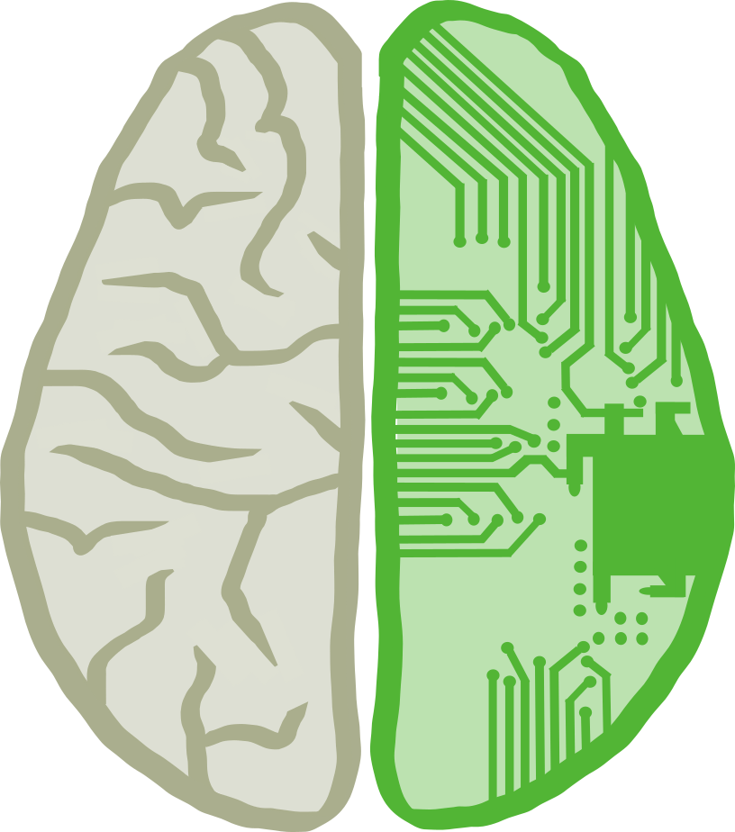

U.C. Berkeley, Class of December 2016
B.A. Cognitive Science
Cognitive Science at U.C. Berkeley is a compilation of classes from six fields: Neuroscience, Psychology, Linguistics, Computer Science, Philosophy, and Sociology. The ideology behind this is that each field individually contributes a unique perspective of the brain and to get a full picture, we must be well-versed in all of these subjects. My favorite classes included Psychology of Sleep, Computational Modelling of Cognition, and Introduction to Linguistics.

B.A. Computer Science
U.C. Berkeley's Computer Science program is a comprehensive, competitive major. Before officially declaring C.S., students take courses in linear algebra, basic computer science principles, data structures, and machine structures and gain experience in Python, Java, and C. Upper Division courses are even more dynamic and require quickly learning new languages and concepts. My favorite classes included Introduction to Design, Computer Graphics, and Machine Learning.